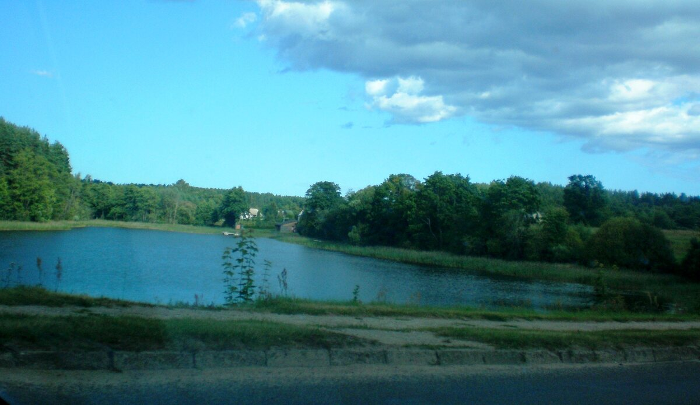

PRIE VANDENS
Vasara prasideda čia.
Paplūdimys ir atviras plaukimo baseinas – maudynėms ežero aplinkoje. Išskirtinis pakrantės akcentas – 10 metrų šuolių į vandenį bokštas.
Naudokitės tik leidžiama infrastruktūra ir laikykitės vietoje pateiktų saugumo nurodymų.